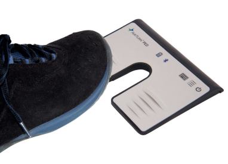

Compatibility
Reference list of tested and compatible pedals for Prompt-Live.
These pedals have been directly tested with Prompt-Live on macOS and Windows.

2-pedal Bluetooth device, recognized as an HID keyboard. Direct connection, no driver needed. Compatible with macOS and Windows.
Any Bluetooth HID pedal that sends one of the supported keys below should work out of the box.
Same key mapping as the PED. Should work natively.
Popular Bluetooth HID pedals among musicians. Standard keyboard mode.
Generic pedals sending ↓ / ↑ in Bluetooth mode. Very common.
Any pedal recognized as a Bluetooth keyboard sending one of the supported keys.
Prompt-Live listens for these keys globally — the prompter window does not need to be in focus.
| Keys | Action |
|---|---|
| ↓ Space F5 | ↓ Scroll down |
| ↑ F6 | ↑ Scroll up |
| ↓ at bottom of page | → Next song |
| ↑ at top of page | ← Previous song |
If your pedal sends different keys (e.g. Page Down, F1…), just add the key to _PEDAL_DOWN_KEYS / _PEDAL_UP_KEYS in main.py.
The Key received label in the control window shows in real time which key your pedal sends.
Open a GitHub issue with the model, the keys it sends, and the result — we'll add it to this page.